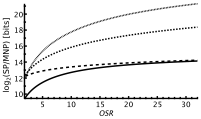
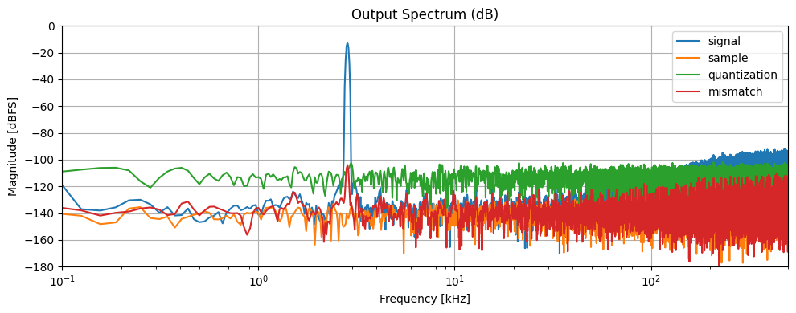
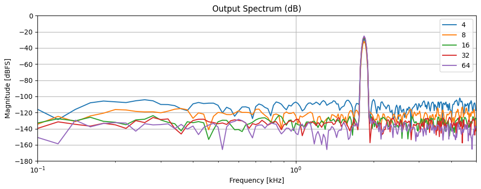
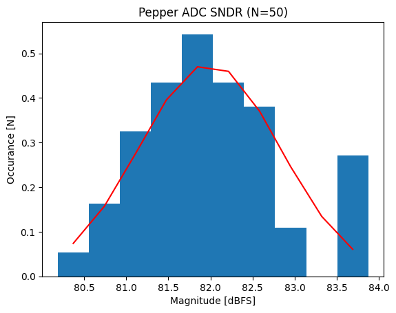
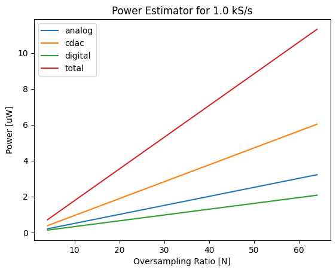

System Modelling#
This document describes the design principles behind the Pepper ADC.
Introduction#
The pepper T4 ADC is based on a fully-capacitive NS-SAR topology using active higher-order noise shaping that achieves state-of-the-art efficiency for high resolution signal acquisition. The proposed configuration is shown in Fig. 1. This figure summarises which signals are processed by each block in a closed-loop fashion to resolve the sampled analogue input signal VIN. The main data-conversion mechanism is based on the conventional SAR controller that uses the comparator decisions K to successively set the MSB and LSB bits. However to augment this operation two separate noise-shaping mechanisms are added; one for quantisation noise, and another for mismatch noise by means of data-weighted averaging (DWA) together with mismatch-error shaping techniques (MES).
{kind=link}
The NS-SAR approach is advantageous because the first several bits can be resolved rapidly using SAR and the remaining bits are resolved using ΔΣ modulation over several samples with reduced oversampling-ratio (OSR) to yield a significant overall improvement in conversion efficiency. Reusing the sampling mechanism of the SAR allows the quantisation residue left on VDAC to be directly integrated by the loop filter H(1/z) that off-sets future conversions and shapes the quantisation noise as 1/(1+H(1/z)). The main drawback here in comparison to high-resolution ΔΣ modulators is that, while the conversion is faster, the mismatch in the high-resolution DAC must be carefully mitigated. This is where the DWA and MES are introduced to eliminate mismatch errors. DWA manipulates the selection of elements used within the MSB capacitive DAC such that the capacitor mismatch is not only decorrelated from the input but is also shaped with a (1-1/z) characteristic. The MES module in the LSB section directly off-sets the sampled input using past conversion results to realise a FIR feedback structure such as (1-1/z) or (1-2/z+1/z²) high-pass characteristics to minimise signal-band noise components.
ADC Design Overview#
Comparing with other data-converters, the NS-SAR topology is quite complex with a large number of design parameters that need to be optimised for efficient operation. Below, several of these parameters are discussed in relation to the ADC precision explaining the proposed configuration. Following the single-ended configuration shown in Fig. 1, we will estimate the expected sampling noise power (SNP), quantisation noise power (QNP), and mismatch noise power (MNP) for the signal bandwidth of fs/(2 OSR) where fs is the sampling speed. This formulation is purposely presented in brief since it based on established theory but it does well to illustrate several trade-off considerations quantitatively when configuring this topology for a particular precision requirement.
The expression in Eq. 1 should be a familiar representation for evaluating the input-referred sampling noise associated with a switched-capacitor integrator. In particular, this corresponds to the input being sampled with a total capacitive value of CT using kT as the Boltzman temperature factor. The second term simply arises from averaging the input over OSR cycles together with a correction factor of 2.4 due to the integrator topology in H(1/z). Fig. 2 shows the estimated resolution for several capacitor values assuming we use an input sinusoid with maximum signal power (SP) given a 1.8 V ADC reference voltage as VDD. Inevitably, achieving high resolution implies a large sampling capacitance or a large oversampling ratio. Typically the former is preferred because increasing the capacitive load also decreases the mismatch power from the capacitive DACs.
The expression in Eq. 2 parametrises the overall SAR resolution as N, the loop fillter order as M, and the number of time constants we allow the capacitive DAC to settle as τ :in order to estimate QNP. This construction shows that settling and quantisation errors are shaped by the loop filter reducing the noise power by the term outside the brackets. Both in Fig. 3 and in the formulation we observe a strong dependency with regard to M as long as we provide sufficient settling time during SAR conversion. This result suggests that the noise-shaping feed-back must avoid driving the capacitive DAC with active amplifiers during successive-approximation to avoid slowing down the conversion speed or equivalently increasing the power requirement of each amplifier. We can also confirm here that the order of the loop filter does not need to be very high if the QNP needs to match the SNP.
The MNP is evaluated in Eq. 3 with respect to the MES noise shaping order E, the number of bits D used to calibrate each capacitor in the MSB DAC in an idealised way. K represents the MSB DAC resolution in bits.
represents the the capacitor mismatch power using a standard deviation and K=4, the MNP of several configurations is shown in Fig. 4. The observation here is that for small OSR values the mismatch noise is typically dominated by the MSB DAC as the mismatch is not sufficiently shaped. It is relatively expensive to increase the number of elements in the MSB DAC since the scaling is linear and increasing the OSR diminishes the advantage of performing SAR. Instead we propose to calibrate the 15 capacitors in the MSB section as D will reduce the MNP more efficiently. The mismatch from the LSB section contains many more elements and is more effectively shaped using a second-order MES technique.
The above trends are used to optimise the FOMs by correlating hardware requirements with power and accuracy estimators for several configurations.
{kind=link}
{kind=link}
{kind=link}
Montecarlo Simulation Results#
An accurate Monte-Carlo model has been prepared for running system simulations with capacitor mismatch effects. This allows use to evaluate the expected ADC accuracy and include some analog effects such as sampling noise.
{kind=link}
First the individual noise contributor were extracted and evaluated for a particular input and operating supply. This is for the proposed Pepper-T4 configuration referred to as PepperDataConverter_V2 which presents a cut-down version of the original design V1:
class PepperDataConverter_V2(PepperDataConverter_V1):
"""
This is a new version of the Pepper ADC with only 1st order MES
"""
N = 10
msb_unit_capacitor = mpf(2*832.0e-15)
lsb_unit_capacitor = mpf(0.5*52.0e-15)
osr = 16
c_density = mpf(2e-15)
vdd = 1.8
lsb_bits = 6
msb_bits = 4
As expected the results show sufficient modulation of the mismatch components and no spurs are generated in-band. The MOM capacitor mismatch is extracted from simulations for several sizes and used here as follows:
@property
def _msb_mom_capacitor_mismatch_sigma_c18(self):
"""Mismatch sigma from MC simulation. 0.1% for 10x10 µm²."""
reference_area = 831.9e-15/self._c_density # 20.4 by 20.4 finger
reference_sigma = (349.3e-3/831.9) # MC simulation
return reference_sigma * np.sqrt(reference_area / self._msb_unit_capacitor_area)
Now looking at the decimated result for multiple oversampling-ratios gives a good representation of the ADC performance.
{kind=link}
For each ratio we evaluated the conversion precision and this result is quantified below. Notice here that for our target OSR of 16 we achieve 13 bits but in reality we expect +1 extra bit because the model uses a single-ended topology and therefore converts only half the maximum possible input swing.
OSR |
SNDR |
ENOB |
|---|---|---|
4 |
59.96 dB |
9.68 bits |
8 |
69.01 dB |
11.18 bits |
16 |
82.42 dB |
13.41 bits |
32 |
88.61 dB |
14.43 bits |
64 |
93.41 dB |
15.23 bits |
Now taking 50 montecarlo runs shows that we have plenty of margin to meet our specification. In fact we have 2.394 sigma of margin on the design.
{kind=link}
Finally a priliminary estimate for the power consumption was made usign expected estimates on switching energy and analog baising. Here we assume the decimated data rate is at 1 kS/s for the 500 Hz bandwdith. Note that this estimate is adjusted based on measurements using the original design V1. For our application we can expect around 4 uW of power consumption for the oversampling-ratio of 18.
{kind=link}
Analog Circuit Implementation#
Ignoring the digital signal processing here we show the internal analog circuitry that provides the data conversion with noise-shaping. Note that the implemented ADC uses an equivalent fully-differential configuration to gain extra input-dynamic range as well as digital noise suppression. This realisation is entirely based on manipulating the capacitive DAC and enables low-power operation for varying sampling rates. A second distinguishing feature of the proposed topology is that the comparator only requires one input terminal opposed to two seen in prior-art which leads to better linearity and noise performance. In addition the input is bottom plate sampled such that sensitivity to parasitic capacitance and comparator non-linearity is considerably reduced.
This figure also shows three capacitor arrays where the DACM section corresponds to the DWA modulated MSBs and the DACL1/DACL2 section represents the MES modulated LSBs being fed back from the SAR controller. Implementing the second-order MES noise-shaping uses the ping-pong configuration. Implementation of the capacitor network used to perform signal conversion using the bottom sampled capacitor arrays DACM for the DWA bits and DACL1 & DACL2 for the MES bits. The loop filter is also shown where A1 amplifies the quantisation residue that is then integrated by A2 & A3 for noise-shaping.
{kind=link}
Three switched-capacitor amplifiers are used to realise a second-order cascaded-feed-forward-integrator (CFFI) loop filter topology where the first stage provides auto-zeroing as well as signal amplification by CT/C1 = 30. This design uses an asynchronous SAR conversion process which is why there are only 3 phases in the switched capacitor circuit; the sampling phase (SMP), the successive approximation phase (SAR), and the quantisation filtering phase (QNF). The SAR only takes 100 ns and the FSM immediately initiates the QNF phase reducing the input clock to twice the sampling rate. The three phases operate as follows:
First A1 actively samples its offset on the top plate while bottom plate samples VIN on DACM together with the MES code on DACL1/DACL2. A2/A3 are simultaneously integrating quantisation errors and sampling the result VX2/VX3 with respect to VDAC on C6 and C7.
VDAC then converges to virtual ground by switching the input to DACM/DACL1/DACL2 while quantisation errors from prior conversions are removed by grounding the bottom plate of C6/C7. This also disconnects A1/A2/A3 from VDAC.
Finally DACM/DACL1/DACL2 is held and the resulting quantisation residue left on VDAC is amplified by A1 on VX1. C2/C4 samples the voltages VX1/VX2 which are used to integrate during the following SMP phase.
This configuration scales well for varying loop filter structures as 80% of the power is dissipated by A1 and the total sampling noise is dominated by CT. The comparator uses a conventional strong-arm topology that is carefully designed to minimise off-set since this off-set will be seen at the output of A3 after amplification which can diminish the output-swing. Conversely the noise and distortion characteristics of the analogue filtering chain is proportionally reduced when the signal is fed back onto the capacitor array during sampling as the attenuation ratio C67/CT inverts the amplification ratio with good matching.
The MSB DAC calibration mechanism is uses a digital shuffling technique to identify mismatch by switching out different sets of capacitors that will only incur voltage fluctuation on VDAC in the presence of mismatch. These errors are then amplified by A1 after the SAR & QNF process and digitally tunes each MSB capacitor using a capacitive sub-DAC. The sign of each shuffling result is accumulated to adjust the the 15 calibration codes thereby eliminating the mismatch in the MSB DAC. This process can be performed in the background without requirements on the input signal because DWA randomises the capacitor selection mechanism during shuffling.
References#
Leene et. al. “A 68μW 31kS/s Fully-Capacitive Noise-Shaping SAR ADC with 102 dB SNDR,” 2019 Proc. IEEE ISCAS